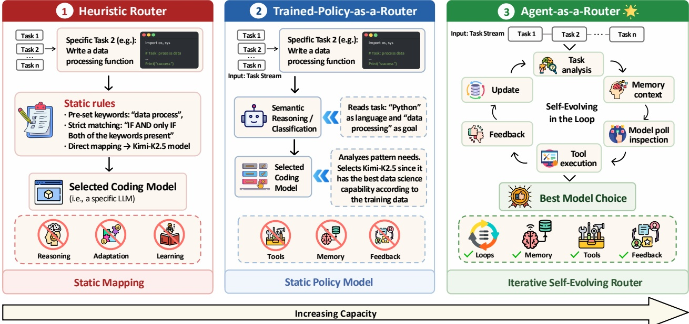
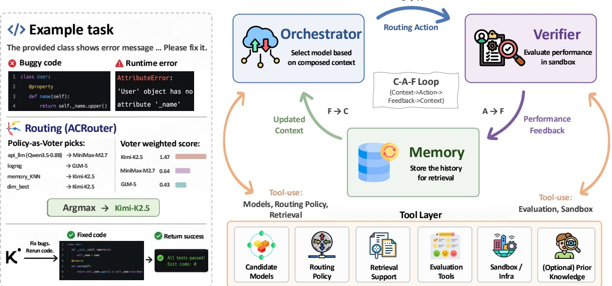
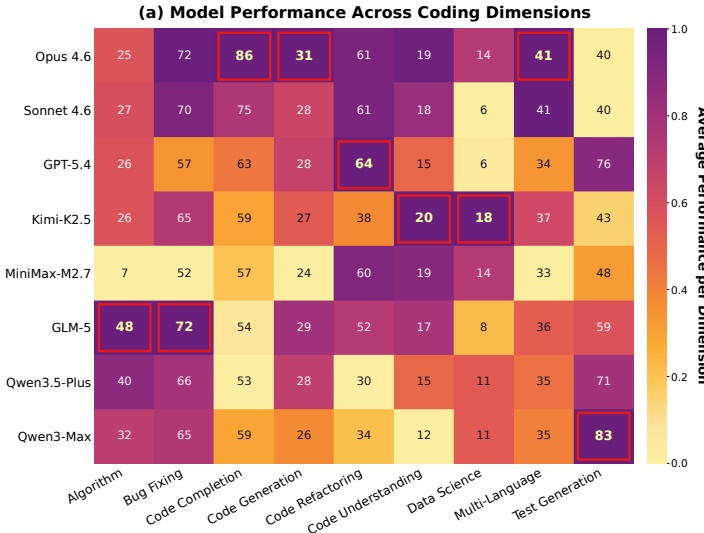

让路由器从执行中
学会选模型
Agent-as-a-Router: Agentic Model Routing for Coding Tasks
当手里有 8 个能力和价格各异的模型时，真正困难的不是“能不能做选择”，而是路由器有没有见过这些模型在相似任务上的真实表现。这篇论文把一次性的模型分类，改写成一个会累积经验的执行反馈闭环。
路由效果差，首先是信息缺口，不是推理不够强。让每次选择都经过执行验证，并把结果写进下一次选择的上下文，路由器才会在任务流中越用越懂。
“选哪个模型”不是静态分类题
现有路由器大致分两类：查表或规则映射，以及训练一个固定策略模型。它们都能根据当前任务做选择，但部署后信息状态冻结，无法从新任务的成功和失败中继续学习。
论文用一个简单但锋利的问题切入：路由模型表现不佳，究竟是因为不会推理，还是因为没有足够的信息？ 这一区分决定了解法。前者会推动更大的路由模型，后者则要求建立验证和记忆机制。

论文图 1：从静态映射、静态策略，到能够利用工具、反馈和记忆持续演化的 Agent-as-a-Router。
- 启发式路由：依据关键词或维度查表，优点是便宜且可解释，缺点是只能复用预先写死的粒度。
- 训练策略路由：能从语义特征中做更细的判断，但策略部署后仍保持静态，没有验证、记忆和在线更新。
- Agent-as-a-Router：把任务分析、模型池检查、工具执行、反馈和 Memory 串成循环。
- 关键差别：能力提升并不来自一次决策更复杂，而来自“这一轮的真实结果会改变下一轮的上下文”。
一组消融，直接定位瓶颈
把五类路由器放回同一套 C-A-F 坐标系
论文没有只拿 ACRouter 和一个 baseline 比，而是把所有方法按 Orchestrator、Verifier、Memory 是否存在来拆解。这样可以看到，每种方法究竟在哪里打断了闭环。
下面每张卡片都先给出一句话定位，展开后再看它的 pipeline、启用的组件、能获得的信息，以及它为什么会在 ID 或 OOD 上表现成那样。
01Single-Model：完全不路由Always-m 把每个任务都交给同一个模型，是性能与成本的参照底线。无闭环
它没有任务级选择能力，因此即使某个模型平均最强，也会错过其他模型在算法、测试生成或数据科学上的专长。Always-Opus 4.6 在 ID 上 AvgPerf 为 43.83，成本为 34.02 美元；ACRouter 以 13.21 美元达到 49.98。
02Static Heuristic：用冻结先验查表DimensionBest 和 frozen kNN 能利用 probing set，但部署中不会产生新知识。C 冻结
DimensionBest 按任务维度选择 probing set 上该维度最好的模型，ID AvgPerf 为 47.50。kNN Retrieval 用相似任务做更细粒度检索，ID 为 47.18，但 OOD 只有 14.29。两者都无法把部署时的新执行结果写回。
03Static Trained Policy：把选择学进模型参数LogReg、MLP、RouteLLM、Qwen FT 能读任务特征，但策略上线后不再更新。A 固定
这些方法在 ID 上集中在 46.16 到 47.26，成本通常只有 6.81 到 7.69 美元，因此是很强的稳定分布 baseline。但 OOD 上大幅跌到 8.93 到 55.36，其中轻量分类器只有 8.93 到 21.43，说明训练分布中的 prompt 特征不再携带同样的路由信号。
04Online Bandit：能更新 reward，但记忆表达较窄LinUCB 和 LinTS 在线更新每个模型的线性后验，因此比静态方法更能适应 OOD。弱闭环
Bandit 具备在线适应能力，LinUCB 在 OOD 达到 49.82，明显好于大多数静态分类器。但它只保留压缩后的 reward 后验，没有任务级验证轨迹，也缺少能组合先验、近邻与元数据的推理式 Orchestrator。
05ACRouter：完整激活决策、验证和任务级记忆每轮执行不仅得到 reward，还留下相似任务可检索的模型表现、成本和验证轨迹。闭环完整
完整配置在 ID 上达到 49.98、CumReg 205.5，在 OOD 上达到 62.50、CumReg 17.0。它的优势不是单个组件独有，而是 Verifier 产生的信息能够通过 Memory 回到 Orchestrator。
C-A-F：把每次执行变成下一次选择的上下文
论文把路由过程形式化为 Context → Action → Feedback → Context。最重要的不是三个字母，而是最后一条回边：没有反馈写回，路由器仍然只是一次性分类器。
单任务 reward 同时考虑性能与成本，论文的统一评估权重为 r = score − 0.1 × USD cost。因此，累计遗憾衡量的不是“选中全局最强模型的次数”，而是整个任务流中每次选择相对逐任务最优解损失了多少。
它由 prompt、可选的维度/难度/语言元数据，以及此前全部循环形成的 Memory 状态共同组成。
包括 Verifier 观察到的任务分数和按 token 用量计算的成本，不依赖模型对自身答案的主观判断。
O 的每个单元保存某任务交给某模型时的真实分数与成本，不同路由器在相同结果表上选择。
它不是固定使用平均最强模型，而是对每个任务单独选择 reward 最大的候选模型。
展开数学定义：从模型池和任务流到 reward matrix 与 cumulative regret
路由器面对模型池 M={m₁,...,mₘ} 和按顺序到达的任务流 T=(t₁,...,tₙ)。策略根据历史 hᵢ 在 M 个动作上产生分布 π(·|hᵢ)，实际选择 aᵢ。
- Reward：rᵢ(aᵢ)=ε₁sᵢ(aᵢ)+ε₂κᵢ(aᵢ)，性能权重为正，成本权重为负。
- Reward matrix：Rᵢⱼ=ε₁sᵢⱼ+ε₂κᵢⱼ，保存任务 i 交给模型 j 的可比较收益。
- 逐任务 oracle：aᵢ*=argmaxⱼRᵢⱼ，每一行都重新选最大值。
- 单任务遗憾：δᵢ=rᵢ*−rᵢ(aᵢ)，累计遗憾是所有 δᵢ 之和。
这套形式与 contextual multi-armed bandit 对应：Context 是 side information，Action 是拉动哪个模型臂，Feedback 是执行后 reward。
ACRouter：决策、验证、记忆三件事必须同时在线
ACRouter 是 C-A-F 的一个具体实现。Orchestrator 整合信息并选择模型，Verifier 通过执行产生新信息，Memory 把信息保留下来。三者缺一个，闭环都会退化。

论文图 2：Orchestrator 做路由选择，Verifier 在沙箱中评价结果，Memory 保存历史，并通过工具层支持下一轮决策。
- Orchestrator：读取 DimensionBest 先验、Memory 中 top-10 相似任务和任务元数据，微调 Qwen3.5-0.8B 与启发式规则通过加权投票给出选择。
- Verifier：调用 AST 解析、沙箱执行、prompt 内测试和规则信号，把多个验证结果聚合为 0 到 1 的统一分数。
- Memory：用任务 embedding 建索引，记录所选模型、观察到的性能、成本和验证轨迹；余弦 kNN 的 k=10。
- 工具层：候选模型、路由策略、检索、评估工具和执行基础设施并不是独立路由方法，而是闭环运行所需的共享能力。
- 数据流：选择模型是 A，沙箱验证是 F，写回 Memory 后形成下一轮 C。
Orchestrator 整合信息
不是只看 prompt，而是组合静态先验、相似历史和元数据。
- Qwen3.5-0.8B 微调策略
- 启发式加权投票
- top-10 历史邻居
Verifier 产生信息
避免模型自评，优先使用执行环境给出的外部信号。
- AST 与规则检查
- 沙箱执行
- prompt 测试与 Judge
Memory 积累信息
让相似任务能看见过去成功和近期失败，粒度细于维度查表。
- embedding 向量库
- FIFO 上限 20K
- 每次尝试后原位提交
OOrchestrator 到底看了哪些信号维度先验、top-10 相似历史、任务元数据和多个 routing tool 共同投票。整合 Context
核心 policy 是在 CodeRouterBench probing set 上微调的 Qwen3.5-0.8B。它不是单独做最终决定，而是与 DimensionBest、LogReg、Memory kNN 等工具形成 policy-as-voter。论文图 2 的示例中，不同 voter 分别选择 MiniMax-M2.7、GLM-5 和 Kimi-K2.5，最终按加权分数选择 Kimi-K2.5。
VVerifier 如何把异质任务压成统一分数任务类型先决定可用工具集合，再将各工具分数按维度权重聚合到 0 到 1。产生 Feedback
可执行任务优先使用 AST、编译、沙箱测试与 prompt 内测试。重构、理解、测试生成等无法完全依赖 pass@1 的维度，会结合代理指标和 LLM-as-Judge。统一分数 uᵢ 是这些工具分数的加权和，权重随任务维度变化。
MMemory 为什么不用“维度 → 最佳模型”字典任务 embedding 能表达算法选择、API 模式和边界条件，粒度远细于维度标签。更新 Context
Memory 的键来自 voyage-code-3 或 BGE-large embedding，值记录模型、性能、成本和验证轨迹。检索使用余弦相似度、阈值 0.5、k=10，FIFO 上限 20K。成功与近期失败都会被检索出来，因此 Orchestrator 不只知道“某模型通常擅长 bug fixing”，还可以知道“它在与当前 prompt 相似的 bug 上刚刚失败”。
为什么普通 contextual bandit 还不够：它能在线更新，但上下文表达和决策机制更弱
论文比较 LinUCB 和 LinTS。它们同样会根据 reward 在线更新，因此在 OOD 上比完全静态的分类器更稳。但它们使用每个模型独立的线性后验，Orchestrator 退化为 argmax，Memory 也没有 ACRouter 的任务级验证轨迹和语义检索。实验中，它们仍落后于完整闭环。
CodeRouterBench 为什么必须是“任务流”
一次性准确率只能回答某个路由器在固定样本上选得怎么样，无法回答它是否会从新反馈中变好。论文因此预先收集每个任务、每个模型的性能与成本，构造完整 outcome matrix，再让不同路由器在同一任务流上比较累计遗憾。
176 个 agentic programming 任务
这些任务要求多步规划、文件导航和迭代调试，与用于 probing 的 9 个单轮编码维度在性质上不同。
- Docker 沙箱执行
- 来自 SWE-bench Verified、LongCLI-Bench、FeatureBench、SWE-CI
- 用于检验静态先验遇到分布变化时是否失效
构建过程分成三阶段
将 15+ benchmark 标准化为 10 个维度、10,111 个任务，并统一 prompt、环境和评分入口。
8 个候选模型分别回答任务，通过执行、代理指标与 Judge 得到每个 task × model 的分数和成本。
Single Model、Random、Heuristic、Trained Policy、Bandit 与 ACRouter 在同一任务流和结果矩阵上比较。
展开 10 个编码维度、数据来源和评分方式
| 维度 | 任务性质 | 来源 | 评分 |
|---|---|---|---|
| Code Generation | 函数级合成 | HumanEval+、MBPP+、BigCodeBench | Exec |
| Algorithm Design | 竞赛式算法题 | LiveCodeBench、BigCodeBench | Exec |
| Bug Fixing | 定位并修复缺陷 | DebugBench、SWE-bench Lite | Exec |
| Code Completion | Fill-in-the-middle 与输出预测 | CRUXEval、HumanEval+ variants | Exec |
| Code Refactoring | 改善代码质量 | Bugs2Fix、CanItEdit | Proxy+ |
| Data Science | 数据分析 pipeline | DS-1000、BigCodeBench | Exec |
| Multi-Language | 跨语言编程 | HumanEval-X、MultiPL-E | Exec |
| Code Understanding | 解释与摘要代码 | CodeXGLUE Summarization | Proxy+ |
| Test Generation | 生成测试套件 | LiveCodeBench、HumanEval+ variants | Proxy+ |
| Agentic Programming | 长时程、多文件仓库任务 | SWE-bench Verified、LongCLI-Bench、FeatureBench、SWE-CI | Sandbox |
Exec 是沙箱 pass@1，Proxy+ 是代理指标并辅以 LLM-as-Judge，Sandbox 是补丁应用与测试执行。
展开数据拆分：probing、ID test、OOD test 分别承担什么角色
- Probing，7,080：9 个单轮维度的 train 60% + val 10%，用于画像模型专长、训练分类器、校准 DimensionBest，并用 200 个 val 任务 warm-start ACRouter Memory。
- ID test，2,919：确定性的 MD5 30% 留出集，各维度 306 到 347 个任务，所有主表 ID 数字来自这里。
- OOD test，176：整个 agentic programming 维度被留出，任何路由器都看不到该维度 ground truth，用于测试根本不同的长时程任务。
展开成本口径：为什么自托管 0.8B 路由器按 $0.054/M tokens 计价
论文在单张 H100 80GB 上用 SGLang 回放 2,919 个真实路由 prompt。300.5 秒稳态窗口处理 8,393,247 个输入 token 与 2,152,601 个输出 token，合计约 35,094 tokens/s。按每 GPU 小时 6.88 美元摊销，得到每百万组合 token 约 0.054 美元。候选 backend 仍按各自 API 价格计费。

论文图 4a：模型能力轮廓明显互补，9 个维度中有 5 个不同模型成为维度最佳。
- Claude Opus 4.6：平均性能最高，但并不统治每个维度。
- GLM-5：算法设计为 47.2%，相对 Opus 4.6 的 25.4% 高 86%。
- Qwen3-Max：测试生成为 82.7%，相对 Opus 4.6 的 39.2% 高 111%。
- Kimi-K2.5：数据科学为 18.4%，高于 Opus 4.6 的 14.2%。
- 结论：候选池存在可利用的专长差异，同时强模型通常更贵，路由同时有质量和成本价值。
闭环在分布变化时才显出真正价值
ID 上，很多静态方法看起来接近 DimensionBest。到了全新的 agentic programming，依赖 frozen prior 的分类器大幅下跌，而能在线吸收反馈的方法保留更多能力。ACRouter 在两个任务流上都取得最低累计遗憾。
ID test
AvgPerf%，n=2,919
OOD agentic test
resolved rate / AvgPerf%，n=176
静态分类器在 OOD 上不是小幅退化，而是结构性失效
| 路由器 | ID AvgPerf% | OOD AvgPerf% | OOD CumReg | 信息状态 |
|---|---|---|---|---|
| ACRouter | 49.98 | 62.50 | 17.0 | 在线 Memory + sandbox feedback |
| LinUCB | 46.84 | 49.82 | 31.1 | 在线线性后验 |
| RouteLLM-BERT | 47.22 | 21.43 | 59.4 | 冻结训练策略 |
| LogReg | 47.26 | 19.64 | 61.8 | 冻结训练策略 |
| Random | 38.75 | 31.25 | 50.4 | 无任务信息 |
轻量分类器在 ID 上与 DimensionBest 只差约 1.3 个百分点，但 OOD 只剩 8.93% 到 21.43%，甚至低于 Random 的 31.25%。论文将其解释为对 probing distribution 的过拟合，以及部署时无法获取新反馈。
一个需要谨慎解释的附录结果：更新后的 GPT-5.4 单模型在同一 OOD split 上达到 75.00%
附录 D.7 报告，更新后的 GPT-5.4 backend 单独解决 132/176 个任务，即 75.00%，高于主表中的 ACRouter 62.50%。这说明候选模型本身的代际进步仍可能带来更大绝对收益。C-A-F 的价值更适合被理解为：当模型池异质且会持续变化时，路由系统应该拥有从真实执行中更新选择依据的机制，而不是宣称路由永远胜过最新最强单模型。
补充实验不是附属数字，它们在逐项排除替代解释
最强 coder ≠ 最强 router
8 个 LLM 都作为零样本路由器测试。Qwen3.5-Plus 最好，Claude Opus 4.6 反而最后。
46.87 vs 39.27Few-shot 不能稳定补信息
3-shot 只改善部分模型，整体仍低于 DimensionBest，说明少量演示并不能替代系统性能先验。
最高 46.03微调是门槛，规模不是
Qwen3.5 从 0.8B 扫到 27B，微调后 AvgPerf 只波动约 0.5 点。
46.21–46.74展开 8 个 LLM-as-a-Router sweep：为什么 Opus 写代码强，却不会零样本路由
所有候选模型都收到同一个路由 prompt，要在 8 个 backend 中选择。零样本结果前五名为 Qwen3.5-Plus 46.87、Qwen3-Max 46.60、Kimi-K2.5 46.29、GPT-5.4 45.91、GLM-5 45.42；Claude Sonnet 4.6 为 41.41，Claude Opus 4.6 为 39.27。
3-shot 后最好的 GLM-5 也只有 46.03。论文因此强调：生成高质量代码的能力与估计“另一个模型在当前任务上会表现如何”的能力并不等价。
展开 Qwen router scaling：30 倍参数规模为什么只带来约 0.5 点变化
| 规模 | AvgPerf% | Oracle gap% | tokens/task | CumReg |
|---|---|---|---|---|
| 0.8B | 46.41 | 18.6 | 500 | 309.1 |
| 2B | 46.69 | 18.1 | 501 | 未保留逐任务日志 |
| 4B | 46.21 | 18.9 | 492 | 未保留逐任务日志 |
| 9B | 46.56 | 18.3 | 496 | 未保留逐任务日志 |
| 27B | 46.74 | 18.0 | 495 | 未保留逐任务日志 |
未微调的 Qwen3.5 9B、27B、35B 会产生无法解析的路由 token，并回退到默认 Sonnet，AvgPerf 退化到 41.31。LoRA 微调后所有规模都超过 46.21，但扩大参数几乎不再提高效果。
展开附录诊断：维度标签只解释约 27% 的逐任务最优模型信息
论文计算 oracle 模型标签与任务维度之间的互信息。维度身份只能捕获约 27% 的标签熵，足以解释 DimensionBest 为什么能到约 0.475，却不足以追上 0.570 的逐任务 oracle。剩余信号位于具体算法、API 模式和边界条件中，这正是 embedding Memory 相比维度哈希要捕获的内容。
展开三档部署成本：便宜分类器、适中闭环、昂贵固定模型分别在交换什么
- 便宜档，约 7 到 8 美元：LogReg、RouteLLM、TF-IDF+MLP、Qwen3.5-0.8B FT，ID 性能接近 DimensionBest，Perf/$ 很强。
- 适中档，约 10 到 13 美元：DimensionBest、ACRouter、online bandit。ACRouter 为 Memory 和 Verifier 付出额外成本，换取最高 AvgPerf 和更低 regret。
- 昂贵档：Always-Opus 为 34.02 美元，却只有 43.83 ID AvgPerf；固定使用昂贵模型既没有逐任务专长匹配，也缺少成本调度。
附录任务告诉我们：维度相同，也不代表最佳模型相同
论文最后给出 10 个维度、每个维度两个任务的 prompt、模型输出、分数和路由决策。它们的作用不是展示更多 benchmark，而是把“逐任务路由”从抽象概念变成具体错误。
重点比较 DimensionBest、LLM 3-shot 与逐任务 Oracle 的选择。只要同一维度内 oracle 仍会换模型，就说明维度先验只能作为起点，不能替代任务内容。
相同维度先验选 Opus，实际最佳是 Qwen3.5
任务要求修复 Counter 运算和缩进问题。Opus、GPT-5.4 得分 0.89，Qwen3.5 得分 0.92。
维度最佳和 3-shot 都没选中唯一得分模型
为 string_sequence 生成测试。Opus 与 GPT-5.4 得分 0，Qwen3.5 得分 1.00。
细节决定 GPT-5.4 还是 Opus 更合适
第二个重构任务中，Opus 得分 0.75，GPT-5.4 为 0.61，Qwen3.5 为 0.14。维度查表仍选择 GPT-5.4。
一个简单输出预测也会暴露格式偏差
任务只需预测 lower() 的输出。Opus 与 GPT-5.4 得分 1，Qwen3.5 因返回执行代码而不是目标输出得分 0。
长时程任务需要补丁级能力，不只是生成函数
任务要求让 pytest --fixtures 显示 fixture scope。Opus 得分 0.72，GPT-5.4 为 0.65，Qwen3.5 为 0.35。
更长的解释不一定更接近摘要 ground truth
任务 ground truth 只有“Generate form.”。Opus 得分 0.10，GPT-5.4 与 Qwen3.5 都为 0.05，显示代理评分任务与执行任务的反馈性质不同。
展开全部 10 类任务的阅读索引：每类任务究竟在测什么
- Code Generation：根据自然语言或函数签名生成可执行实现。
- Algorithm Design：需要算法选择、复杂度判断和边界处理。
- Bug Fixing：在已有代码中定位语法、逻辑或 API 缺陷。
- Code Completion：补全局部代码或预测给定程序输出。
- Code Refactoring：在保留语义的同时改善结构或修复实现，使用 Proxy+ 评分。
- Data Science：处理 pandas、matplotlib 与分析 pipeline，强调库调用细节。
- Multi-Language：覆盖 JavaScript、TypeScript 等不同语言语法与惯用法。
- Code Understanding：生成代码摘要，结果依赖代理指标与 Judge。
- Test Generation：生成能覆盖行为和边界条件的测试套件。
- Agentic Programming：在真实仓库中导航文件、修改补丁、运行测试并迭代调试。
实践上，不必第一天就上完整 ACRouter
论文附录给出的建设路径很务实：先建立可验证的 task × model 数据，再根据分布稳定性和预算逐步升级路由器。
先用 probing set 建维度 × 模型性能矩阵。静态查表几乎没有运行开销，论文称它达到约 83% 的 oracle AvgPerf。
如果分布稳定且更重视 Perf/$，LogReg、RouteLLM 等能以较低成本接近 DimensionBest。
如果会遇到新任务分布，就启用 Verifier 和在线 Memory，让每次执行结果真正改变未来选择。
这篇论文最值得带走的泛化
C-A-F 并不只适用于模型路由。只要系统需要在多个选项中反复决策，而且结果可以被外部验证，就可以把同一结构迁移到工具选择、API endpoint、prompt 策略、思考预算、skill 路由或 sub-agent 路由。
供应商 cache hit 不可观测，论文按公开 token 价格和测量用量估算美元成本。
agentic programming 使用 40 步上限，而不是标准 250 步，以控制实验预算。
论文实现是 LLM policy + embedding kNN，参数级或更高级记忆仍未探索。
如果反馈信号无法可靠反映任务成功，闭环也会把噪声写入 Memory。
更大的路由模型不一定更会路由。论文的补充实验甚至发现，最强 coder 可能是很差的零样本 router。真正关键的是：系统能否把经过执行验证的经验，变成下一次决策可检索的上下文。